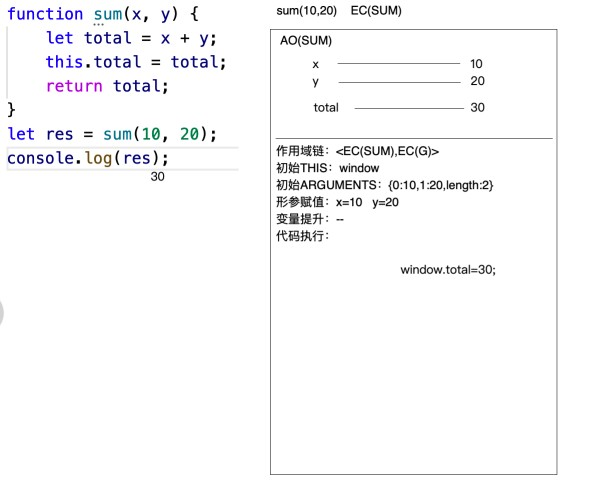
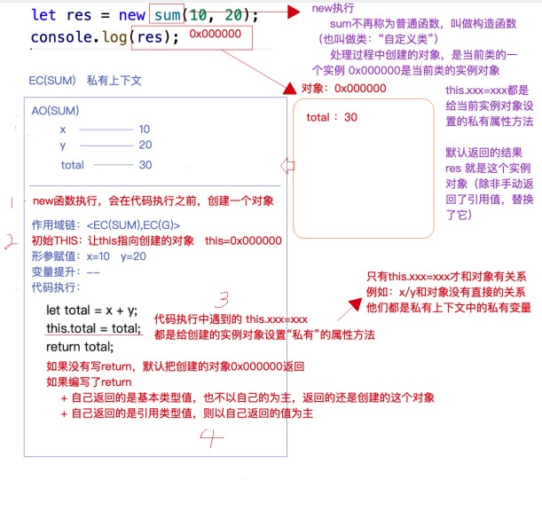
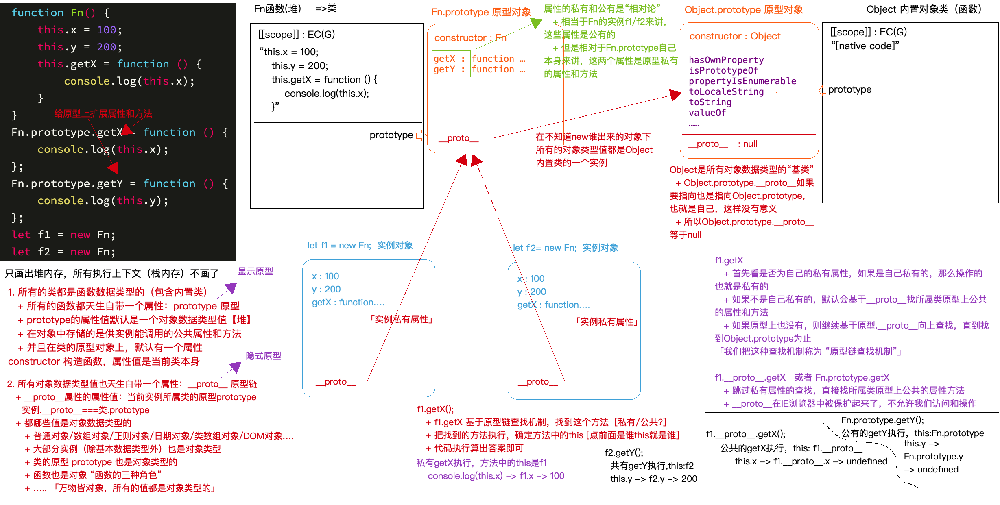
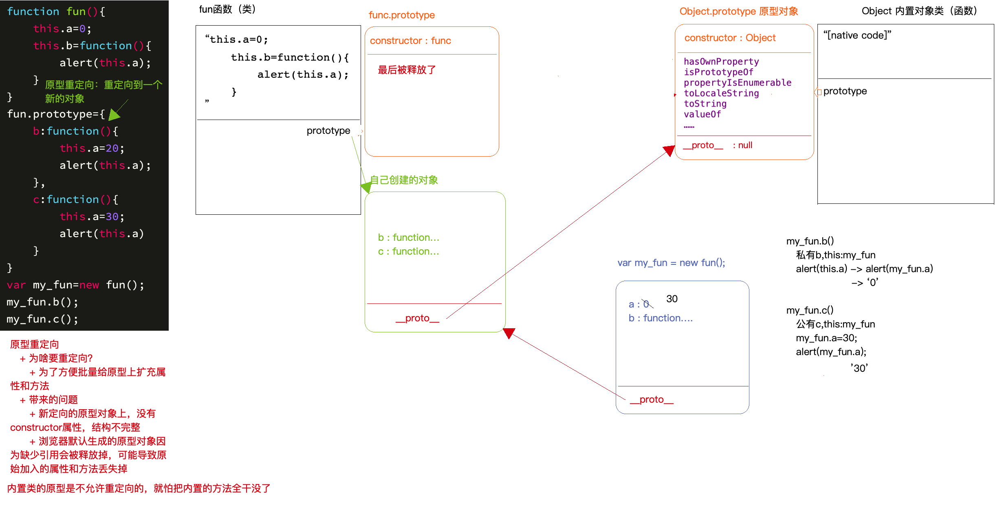
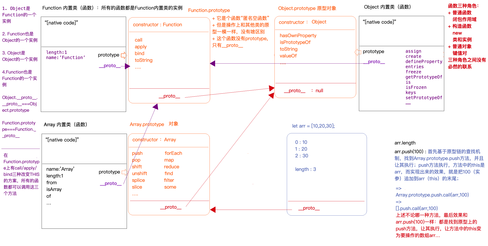
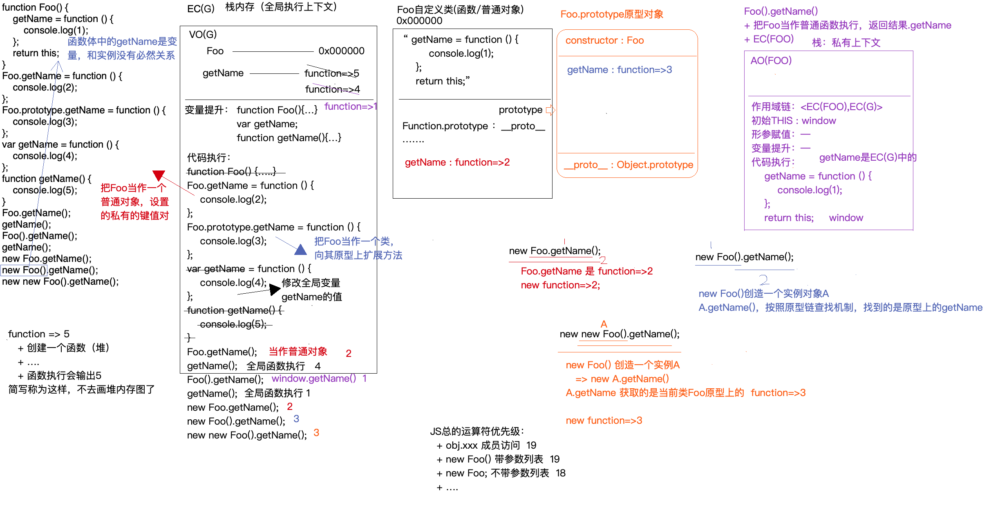
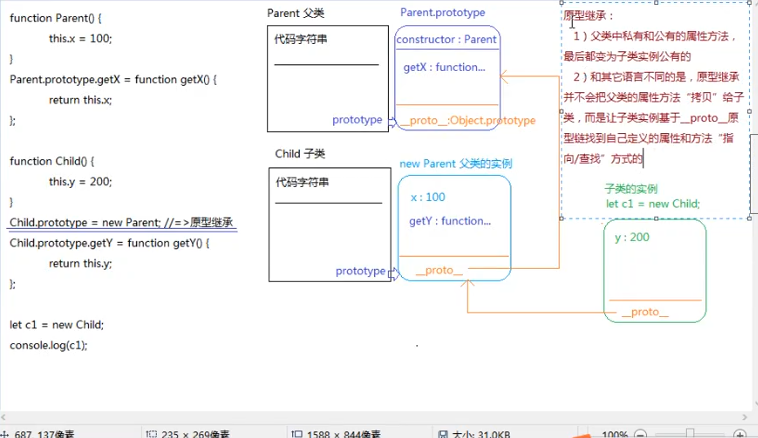
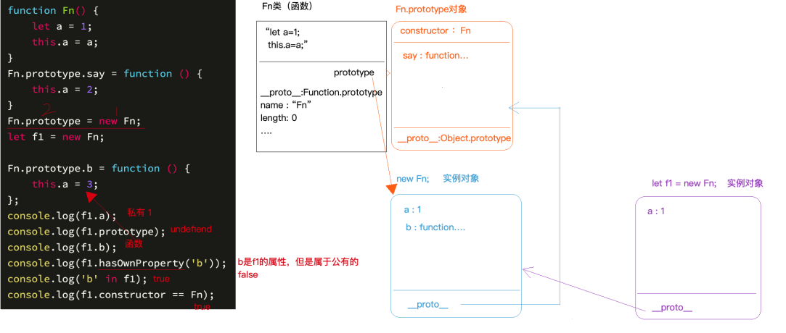

面向对象
编程思想
1 | 1. OOP 面向对象 js java php python |
面向对象的概念
1 | 1. 我们js 所有的东西都可以理解为一个类 |
1 | 「数据类型类：我们见到的数据值都是所属类的一个实例」 |
自定义类
1 | 1. 上面的那些和方法 都是自己去写的类 也就是js 已经你写好的 |
1 | //普通函数执行 |

1 | // 当我们加了new 之后 执行的方式就不一样了 |
带 new 的函数执行都干了什么
1 | 1. new 的函数执行 首先会和普通函数一样 形成上下文EC(XXX) AO(xxx) 初始化作用域链 形参赋值 变量提升 等等 |

面向对象 原型prototype 和 原型链proto
1 | 1. 每一个类(函数) 都具备 prototype(隐式原型) 并且属性值是一个对象 |

1 | //总结 |
原型重定向
1 | 1. 原型重定向 就是把 prototype 的指针指向一个新的对象 |
1 | function Fn (){ |

原型重写 new
1 | 1. 我们自己来实现一个_new函数 |
1 | function Dog(name,age){ |
基于内置类原型扩充方法
1 | 1. 我们知道内置类 比如 Array Object 都是函数数据类型 就会有一个自己所属的堆内存 但是里面的代码我们看不到 就会有一个 native code |
1 | // 我们用 数组去重举例 |
1 | // 我们现在 实现一个加减 的方法 |
1 | //基于以上的总结 |
函数的三种角色
1 | 1. 我们要知道 所有的函数 都是也都是 Function 的内置类 置换出来的 |

1 | //实例 |

THIS种的五种情况
1 | 1. 给当前元素的某个事件行为 绑定方法 当事件行为触发 方法执行 方法种的this 一般都是 当前操作元素 排除IE6~8中 基于 attachEvent进行的DOM2事件绑定 方法中的 this 是 window |
1 | document.body.onclick = function () { console.log(this) } //输出是body |
1 | 2. 函数执行(看函数前面是否右点) 点前面是谁 this 就是谁 没有点 this 是window 严格模式下 是undefined 匿名函数(自调用函数/回调函数) 一般this 就是window |
1 | const fun = function () { console.log(this) } |
1 | 3. 构造函数 new 执行 函数体中的this 是当前的实例 |
1 | function Fn(){ |
1 | 4. 箭头函数中 或者 基于{} 形成的块级上下文 里面没有 this 如果 代码中有this 也不是函数自己的 而是 自己所在的上下文中的 |
1 | let obj = { |
1 | 5. 我们可以基于function.prototype 上的call / apply /bind 去改变this 指向 但是对于箭头函数无用 |
1 | const fn = function fn (){ |
1 | // call 的执行逻辑 |
1 | // 定时器中的call |
手写call / apply / bind 源码
手写 bind
1 | function fn (x,y) { |
手写call
1 | // call 和 apply 是立即执行 不会像bind 一样 赶回一个匿名函数 |
js中的继承
1 | 1. JS 本身是基于面向对象开发的 编程语言 我们学习 就是学习的它的类 |
原型继承
1 | 1. 原型继承 其实就是让 子类的原型 prototype 指向 父类的实例 |
1 | function Parent() { this.x = 100 } |

call继承
1 | 1. 我们刚刚看到原型继承 父类 私有的 和父类公有的 属性和方法 都变成子类实列公有的了 这样不是我们期待的 |
1 | function Parent () { this.x = 100 } |
寄生组合式继承
1 | 1. 就是 把我们的原型继承 和我们的call 继承 组合其来 |
1 | function Parent() { this.x = 100 } |
1 | // 但是以上的方法 在IE中这个方法并不可用 所以我们需要是用Object.create() |
1 | //实例 |
1 | //示例 |

1 | //实例 |
1 | // 实例 |
数组对象的深克隆/浅克隆
浅克隆
1 | 1. 浅克隆 就是 把一级对象 拷贝一份 如果对象里面还有引用类型的值 是拷贝不了的 |
1 | let obj = { |
深克隆
1 | 1. 方案一 都变成字符串 在重新变成对象 这样浏览器会重新开辟全套的内存空间存储信息 比如 JSON.Stringify / JSON.parse |
1 | // 缺点 值如果是 正则 Symbol('AA') BigInt 函数 日期对象(会变成字符串) 都会拷贝不过来 |
1 | 2. 方案二 自己单独一层一层处理 |
1 | function cloneDeep (obj) { |
数据类型检测
1 | 1. typeof 返回结果是一个字符串 字符串包含了对应的数据类型 number string boolean bigint undefined symbol object function 原理是 按照计算机底层存储的二进制来进行检测的 也无法区分 是哪个构造函数 搞出来的实例 |
instancof
1 | //instancof |
1 | //重写 instancof |
constructor
1 | // 如果constructor 在不修改的情况下 |
Object.prototype.toString.call
1 | // 基本上所有类的原型上 都有toString方法 Number String Boolean Array Function RegExp Symbol Date Object |


公告
感谢访问本站，如喜欢请收藏。本站主要分享前端知识，立志成为资深前端工程师，但目前是一个前端界的小学生 若喜欢可以打赏请博主喝一杯冰阔落
另外请大家多多支持淼哥的开源项目
https://github.com/flipped-aurora/gin-vue-admin
🌟🌟欢迎大家start 🌟🌟
欢迎加入博主的前端技术交流群